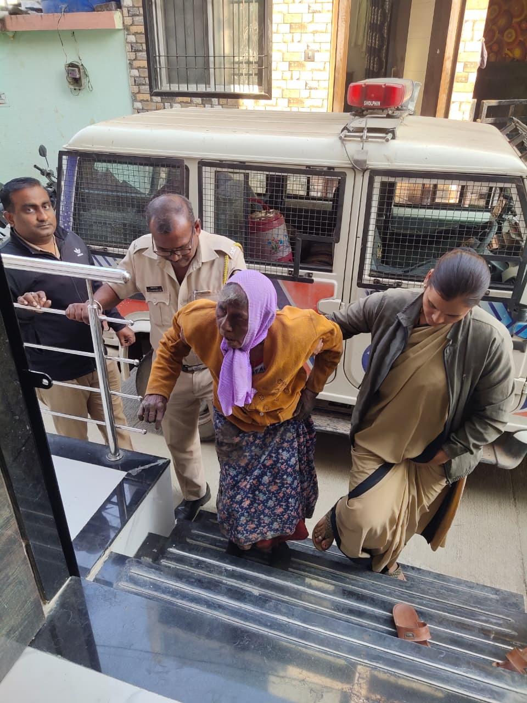

कथा ०१
माईची माया मिळालेली एक आई
वेदांतनगर पोलीस ठाण्याच्या हद्दीत एक वृद्ध माता एकट्या अवस्थेत आढळल्या. पोलीस निरीक्षक संगीता गिरी मॅडम यांनी संवेदनशीलतेने त्यांची विचारपूस करून त्यांना सुरक्षित आश्रय मिळवून देण्यासाठी पुढाकार घेतला. त्यानंतर त्यांना माई वृद्धाश्रमात आणण्यात आले.
माई वृद्धाश्रमात आल्यानंतर संचालिका मीरा वाघमारे आणि ऋत्विक वाघमारे यांनी प्रेमाने त्यांची विचारपूस केली. त्यांना जेवण, फळे, चहा, स्वच्छ कपडे आणि विश्रांतीची व्यवस्था देण्यात आली. एका अनोळखी दिवसातून त्यांना पुन्हा मायेचा आणि सुरक्षिततेचा आधार मिळाला.